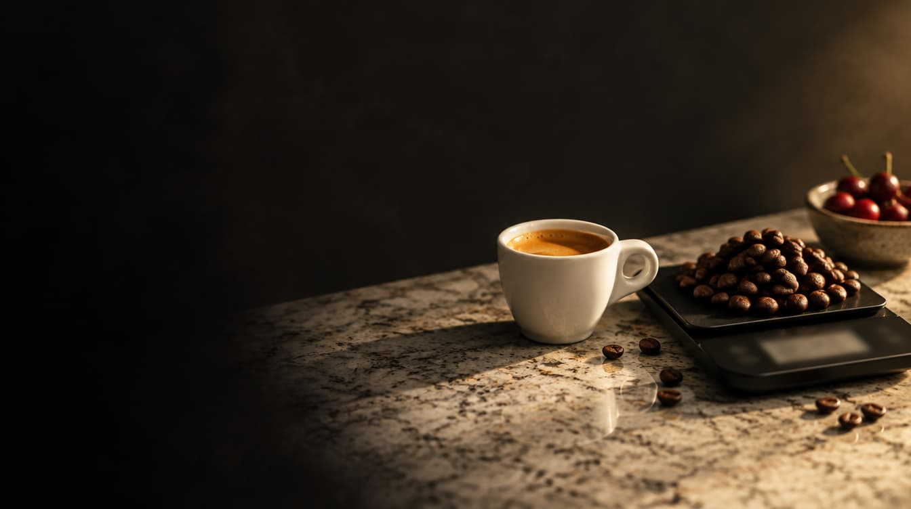
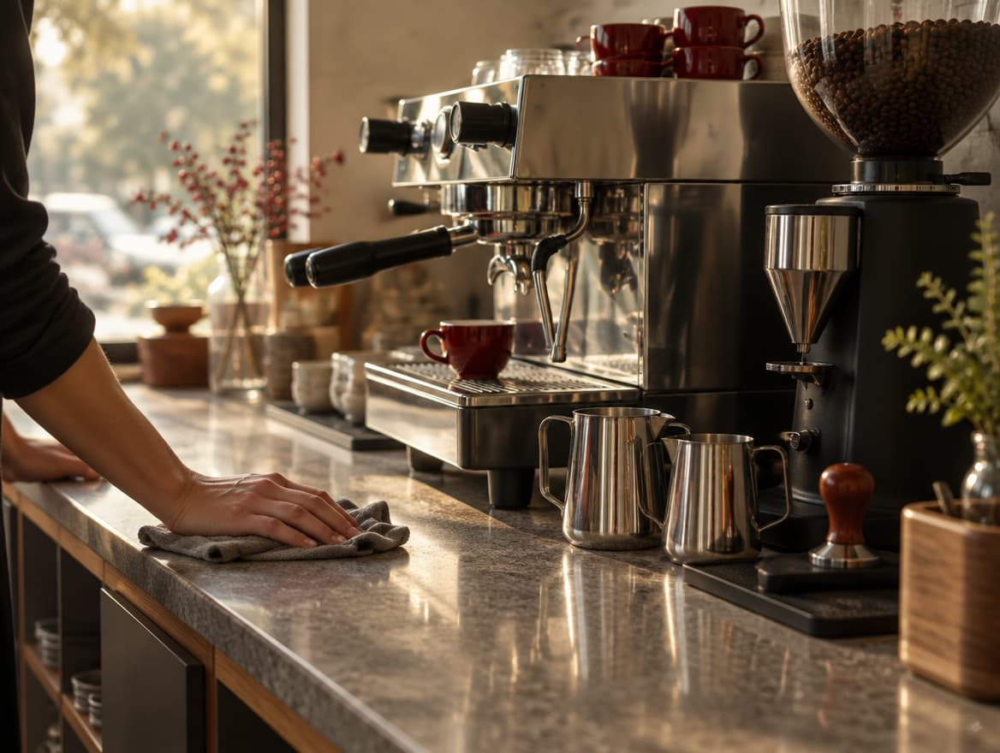
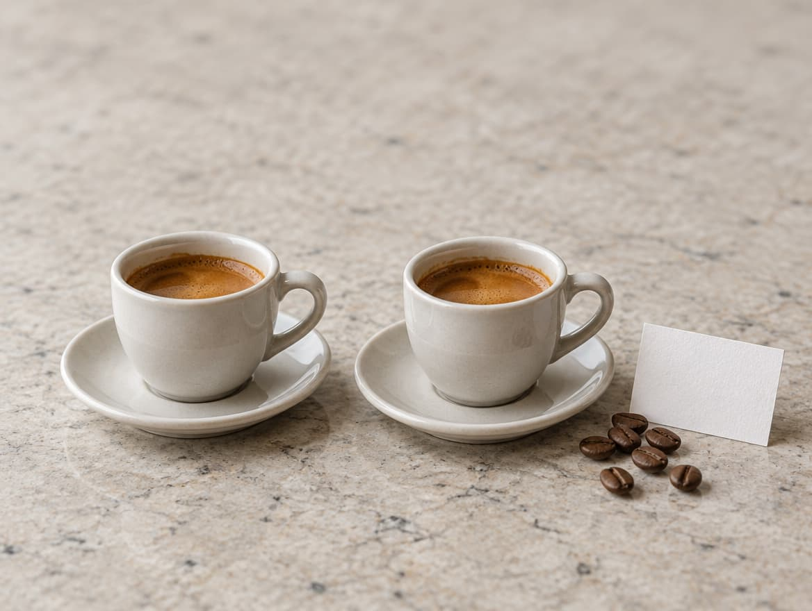
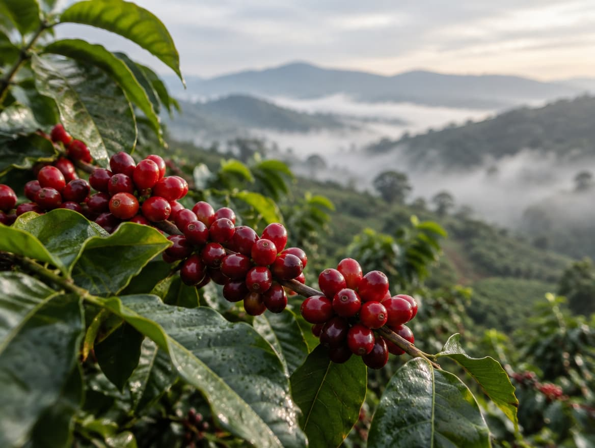

Haz tú el cálculo
Mueve los tres controles y mira cuánto café hay en tu taza.
Café · El resto: leche, personal, local, equipo
- Coste del café en la taza
- 0,45 €
- Porcentaje del precio
- 18 %
- Si el café sube 10 €/kg
- +0,18 € por taza
Este cálculo solo cuenta el grano. No incluye leche, vasos, luz, agua, personal ni alquiler.
¿Y el resto del dinero?
No damos porcentajes inventados. Estos son los costes que tiene cualquier cafetería:
El grano
Lo que has calculado arriba.
Tueste y envasado
Si el local compra café ya tostado, esto ya va en el precio por kilo. Si tuesta el propio local: tostadora, mermas, bolsas y transporte.
La leche
En un café con leche puede pesar tanto como el grano.
El personal
Formación, horas de barra, calibrar la máquina cada mañana.
El local
Alquiler, luz, agua, licencias. En Madrid, el coste más variable.
El equipo
Máquina, molinos, filtros de agua y su mantenimiento.

3 € frente a 2,50 €
Un pionero del café de especialidad en Madrid describía así su carta en 2025: un café con leche a 3 €, frente a los 2,50 € de un bar tradicional.
Son 50 céntimos de diferencia.
En esos 50 céntimos caben: un grano con origen conocido, un tueste reciente y alguien que sabe explicártelo.
Es un ejemplo concreto de septiembre de 2025, no un precio medio de Madrid.
Fuente: El Independiente.

5 señales de que el precio tiene sentido
Marca las que encuentres. Si marcas 4 o 5, pagas por algo real.
Marca las señales que encuentres.
Si sube el café, ¿cuánto sube la taza?
- El precio del café verde es muy volátil.
- En 2023, Caffènation, un tostador de Bélgica y Países Bajos, subió de media 3 €/kg el precio de su café tostado.
- Con 18 g por espresso, 3 €/kg son unos 5 céntimos por taza. Es nuestro cálculo; el tostador habla de unos 3 céntimos con 100 tazas por kilo.
- El grano es solo una parte del precio, así que una subida del café se nota poco en cada taza.
Fuente: Perfect Daily Grind (2023), entrevistas a Caffènation y Bonanza Coffee.

Preguntas
Preguntas frecuentes
¿Otra duda? Escríbenos →01¿Por qué cuesta más que el café del bar?
Por el grano, la frescura y el trabajo de quien lo prepara. El grano es solo una parte.
02¿Cuánto debería costar un café de especialidad en Madrid?
No hay precio oficial. Lo que sí puedes mirar son las cinco señales de arriba.
03¿Pagar más significa mejor café?
No automáticamente. Un precio alto sin origen, ni fecha, ni explicación es solo un precio alto.
04¿Me sale más barato prepararlo en casa?
Casi siempre sí, una vez compras báscula, molinillo y gotero. Mira la calculadora de nuestras guías.